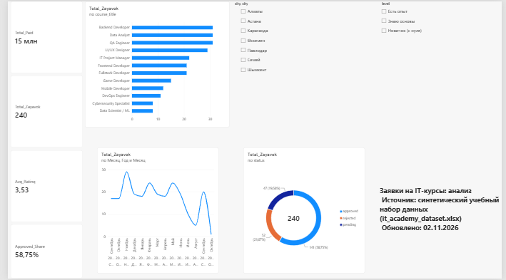

Аналитика заявок на IT-курсы
Дашборд Power BI по учебному набору данных: заявки на 12 курсов, оплата, источники и оценки студентов.
240
заявок
59 %
доля одобренных
65 %
конверсия в оплату
15,5 млн ₸
оплачено
3,5
средняя оценка

Три вывода
Выводы сделаны по диаграммам и срезам дашборда; значения у курсов считаны с диаграммы и округлены.
- Спрос сосредоточен на нескольких курсах. Backend Developer, Data Analyst и QA Engineer получили примерно по 31 заявке, вместе это около 39 % из 240. Меньше всего заявок у Cybersecurity Specialist и Data Scientist / ML (примерно по 8), то есть этим курсам нужно отдельное продвижение.
- Одобрено 58,75 % заявок (141 из 240). Ещё 52 заявки (21,67 %) отклонены, а 47 (19,58 %) ожидают решения. Почти пятая часть заявок висит без ответа, поэтому скорость проверки напрямую влияет на число студентов. Оплачено 15 455 000 ₸, это около 64 400 ₸ на одну заявку.
- На Семей приходится около 38 % заявок, но оценки там ниже. Из Семея пришла 91 заявка, средняя оценка 3,27 при общей 3,53. Причину стоит проверить по курсам и преподавателям этого города.
Данные и источник
Данные вымышлены и не относятся к реальным людям. В файле Excel есть лист «Справочник полей» с описанием каждого столбца.